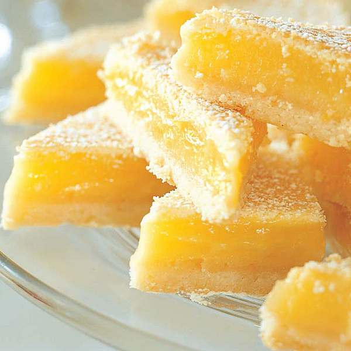

Home
JustHood's Lemon Bars

Description
Made famous by Reddit user u/JustHood, this lemon treat is sure to be a big hit at every event and for every age group. Thousands of users have gone on to add their own twist to what is now an internet sensation, but this base recipe will never let you down.
Ingredients
- 2 cups + 4 tbsp flour
- 1/2 cup powdered sugar
- 4 eggs
- 5-7 tbsp fresh-squeezed lemon juice
- 2 cups sugar
- 1/2 tsp salt
Steps
- Preheat oven to 350
- Cream flour, butter, & powdered sugar and press into ungreased 9 x 12 pan. Bake 20 minutes at °350.
- Beat eggs & lemon juice, then sugar and flour, & salt.
- Pour on baked crust. Bake 25 minutes at °350. Sprinkle with powdered sugar while still warm.